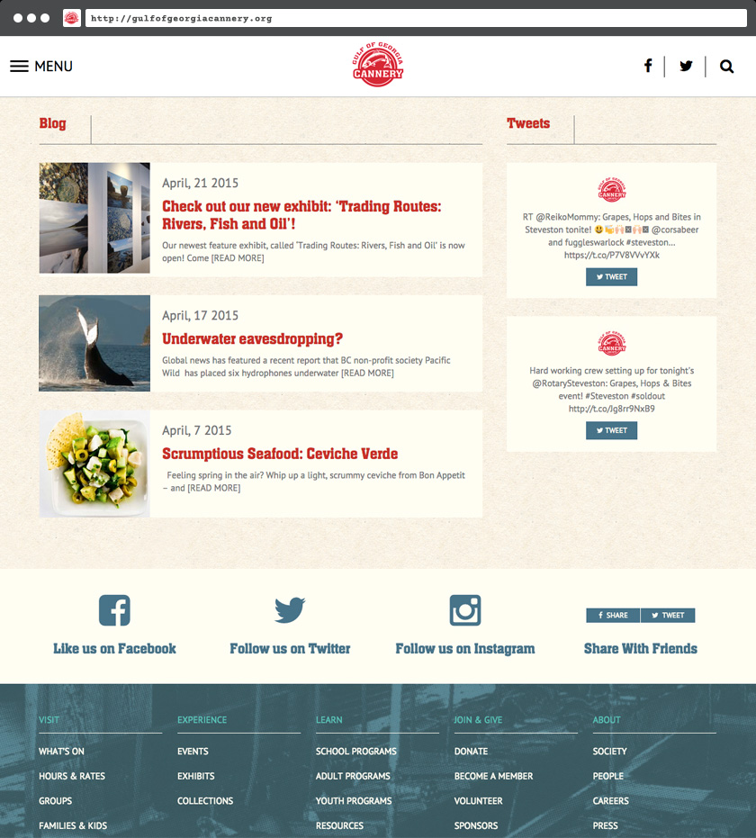

Gulf of Georgia Cannery
A modern look and updated online presence for a historic B.C. institution.
The Gulf of Georgia Cannery was relying on a host of stock templates to serve the content of their five-site WordPress install. While their sites were well-maintained and visited, it was hard for them to communicate museum's message through the restrictions of these templates. They needed a way to express the look and feel of their space and manage the public functions of the museum, such as weekly events, farmers markets, notifications of rotating exhibits, visitor information, membership information, donation collection, and more.
If this sounds like a lot, it was — but between tryl.es and Department of Public Image, we made it happen.

The homepage provides a big and bold welcome image on both desktop and mobile devices.

Information is organized into easily navigable sub-pages linked directly from the homepage, helping visitors find what they want quickly and easily.

The blog aims to be minimal and make use of the Cannery's extensive collection of archival photographs. A custom Twitter feed pulls tweets with a custom-built app.
A mobile-first responsive grid displays rotating exhibitions. The nav bar changes size across sceen widths to make efficient use of on-screen real estate.
A custom-built events feed retires posts as they complete, which means the staff doesn't have to worry about moving old content off of the front page.
Conclusion
50+ pages, five sites, and a ton of content — all routed through one WordPress install. Donation management, image management and custom Twitter and event feeds. This site went the extra mile, and will hopefully serve the Cannery organization for many years to come.